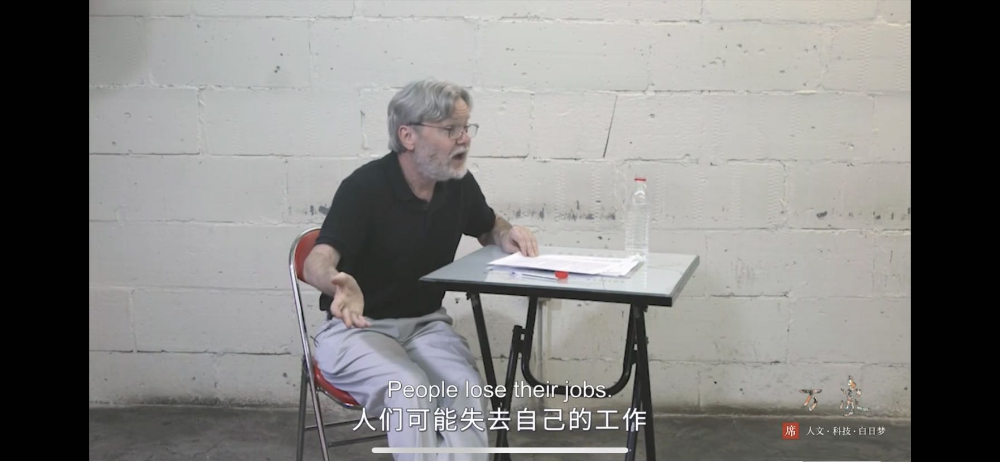
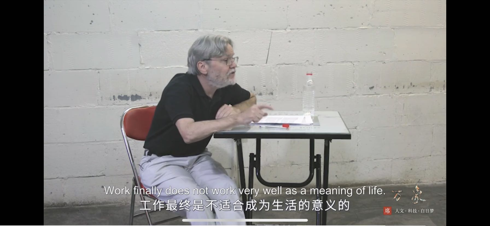
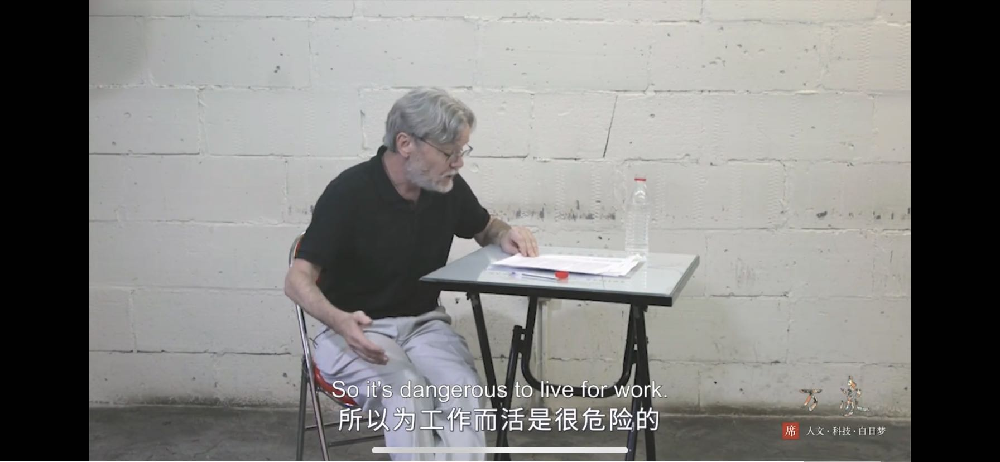

生活的意义
生活意义
我本来是不觉得生活本身有什么意义。看完Gorden Mathews的前两集讲座之后，也依然觉得生活本身并没有什么意义。不过确实认同工作最终是不适合成为生活的意义的。
如果大多数人追寻生活的意义，那么社会就会瓦解。现实是大多数往往都会自动适应社会的惯例，自主地或随波逐流地将自己代入社会分工中去，并实行自我欺骗赋予生活以意义。
从工作中获取地意义往往在于两点：
- 可衡量的进步：职称、薪资、销售额等等
- 创造
创造性的工作总是稀缺的，工作内容中的创造性部分也是稀缺的。而可衡量的进步往往更加实在、具体。
  
很多名言、书籍都会告诉人们应该如何生活，追寻怎样的人生，泛滥的引用充斥在各种角落。我只想引用一句散落在偏僻角落的话来作结：
当我还是一个相当早熟的少年的时候，我就已经深切地意识到，大多数人毫无休止地追逐的那些希望和努力都是毫无价值的。而且我不久就发现了这种追逐的残酷，这在当年较之今天是更加精心地用伪善和漂亮的字句掩饰着的。
- 原文作者：Hao Dong
- 原文链接：https://haodongnj.github.io/haodongnj/post/life-meaning/
- 版权声明：本作品采用知识共享署名-非商业性使用-禁止演绎 4.0 国际许可协议进行许可，非商业转载请注明出处（作者，原文链接），商业转载请联系作者获得授权。